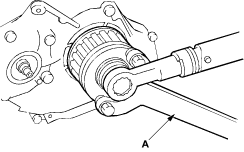

- Tighten bolt to the specified torque using the special tool (A) (5-8840-7008-0).
Tightening torque: 196 Nm (20.0 kgf/m, 145 lbf/ft)

Oil Pump Pulley Installation
- Install oil pump pulley (A) to oil pump shaft correctly. Tighten fastening nut to the specified torque.
Tightening torque: 44 Nm (4.5 kgf/m, 32.5 lbf/ft)

Idle Pulley Installation
- Install the idle pulley.
Tightening torque: 80 Nm (8.2 kgf/m, 59 lbf/ft)

Fuel Supply Pump Pulley Installation
- Install the fuel supply pump pulley (A).
Lock fuel supply pump pulley using TDC fixing bolt (B). Tighten fastening nut to the specified torque.
Tightening torque: 69 Nm (7.0 kgf/m, 50.6 lbf/ft)